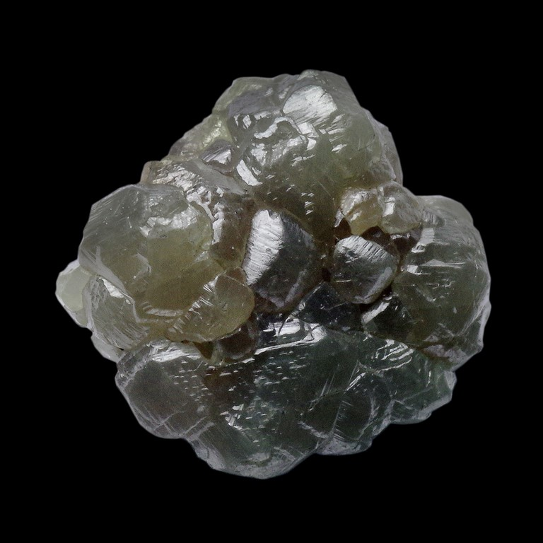
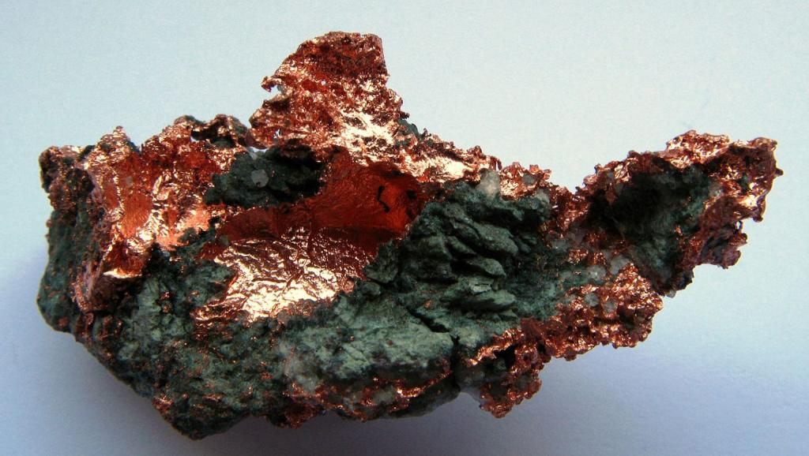
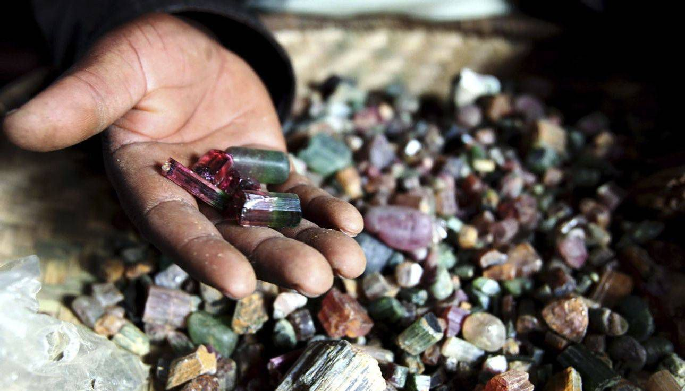
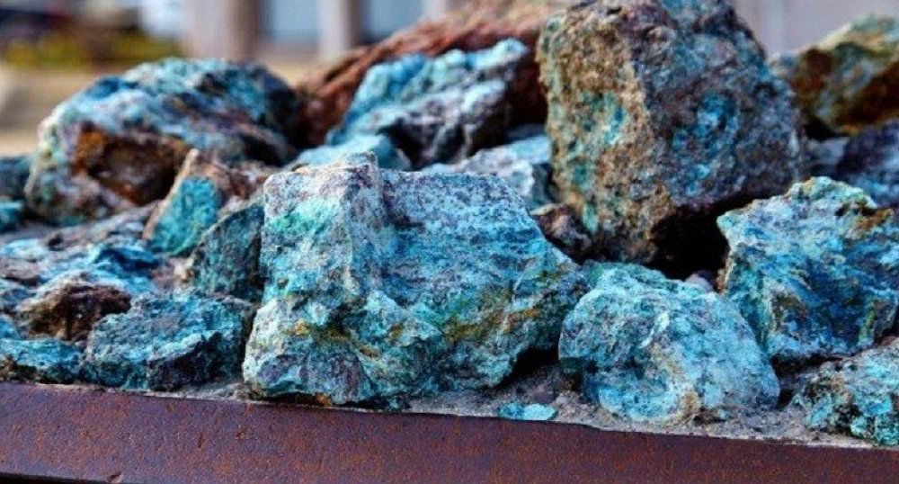
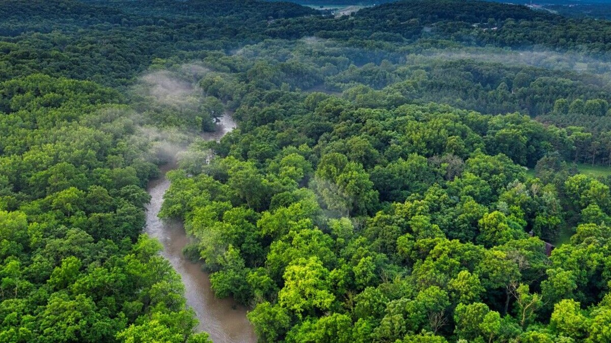

Capital: Kinshasa

Kinshasa is the capital and largest city of the Democratic Republic of Congo, with over 15 million residents. It is one of the fastest-growing urban areas in Africa, located along the Congo River.
The DRC gained independence from Belgium on 30 June 1960. This historic event marked the beginning of the nation’s sovereignty.
Natural Resources
The country is rich in minerals such as cobalt, copper, coltan, and diamonds. These resources make the DRC a central player in global supply chains, especially in the production of batteries and electronics.
   UNESCO World Heritage Sites
The DRC is home to several UNESCO sites, including Virunga National Park and the Okapi Wildlife Reserve. These sites highlight the country’s unique biodiversity and ecological importance even in the equatorial forest, which is the biggest forest after amazonian forest.